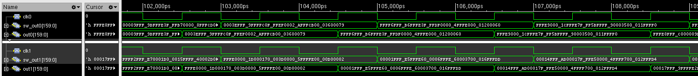
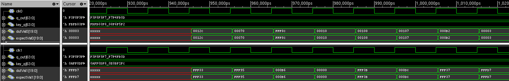

Cross-domain sum exchange
A dedicated asynchronous FIFO and separate read clock decouple the two cores. Per-domain reset synchronizers provide asynchronous assertion and synchronous release.
Mark Sui
RTL / Physical Implementation / Team Project
Two clock domains. Shared normalization. A measurable timing–power tradeoff.
A Verilog attention accelerator for INT8 query–key dot products and output normalization, developed from a single-core baseline through dual-core integration and sparsity-aware execution.
I participated in this six-person UC San Diego team project. Architecture and implementation results below describe the team’s reported system.

01 / Architecture
Each core combines query/key SRAMs, a MAC array, partial-sum storage, an output FIFO, and a normalization block. Local absolute-value sums cross to the partner clock domain through asynchronous FIFOs, then contribute to a shared normalization denominator.
Conceptual data flow, based on the optimized RTL. SFP denotes the project’s normalization block; this implementation uses absolute-value sums and integer division.
02 / Optimization
A dedicated asynchronous FIFO and separate read clock decouple the two cores. Per-domain reset synchronizers provide asynchronous assertion and synchronous release.
A balanced adder tree replaces serial absolute-value accumulation. Registering numerator and denominator inputs breaks up the normalization path; a zero-denominator check returns zero.
Step 6 adds a row-skip flag driven by a Python-derived threshold. Skipped rows bypass writeback and gate divider activity, trading some timing improvement for lower reported power than Step 5.
Input: local sum 256, partner sum 128, lane magnitude 96.
Output: integer result 32.
Why: the optimized RTL scales each sum by shifting right 7 bits: (256 >> 7) + (128 >> 7) = 3. The registered division then computes 96 / 3 = 32. If the scaled denominator is zero, the result is zero.
Illustrative arithmetic from sfp_row.v; not an additional simulation result.
03 / Reported implementation results
Step 5 improves setup WNS by 3.353 ns relative to the dual-core baseline, while increasing reported power. Step 6 reduces power by 24.5% relative to Step 5, with a small area reduction and more negative WNS.
| Implementation | Setup WNS (ns) | Power (mW) | Area (mm²) |
|---|---|---|---|
| Step 4 · Dual core | −4.219 | 260.98 | 7.16 |
| Step 5 · Optimized | −0.866 | 443.4 | 6.925 |
| Step 6 · Sparsity | −1.06 | 334.86 | 6.85 |
These are the project report’s implementation results, not new benchmark runs. Negative WNS means setup timing violations remain; the project is not presented as timing-closed silicon.
04 / Verification evidence
The report records passing dot-product and normalization functional simulations after the Step 5 testbench writeback was delayed by one cycle to match the added pipeline stage.

Top groupclk0, reference sw_out0, and hardware out0.
Bottom groupclk1, reference sw_out1, and hardware out1.
Read it for alignment
Compare output values after the pipeline delay in each clock domain.

Explore my Viterbi decoder, review my background, or get in touch about engineering opportunities.
Team: Anjana Manoj, Ashwin Manoj, Devansh Gupta, Lingzhan Xu, Mark Sui, and Riyansh Chaturvedi. Source: final project report and linked RTL.